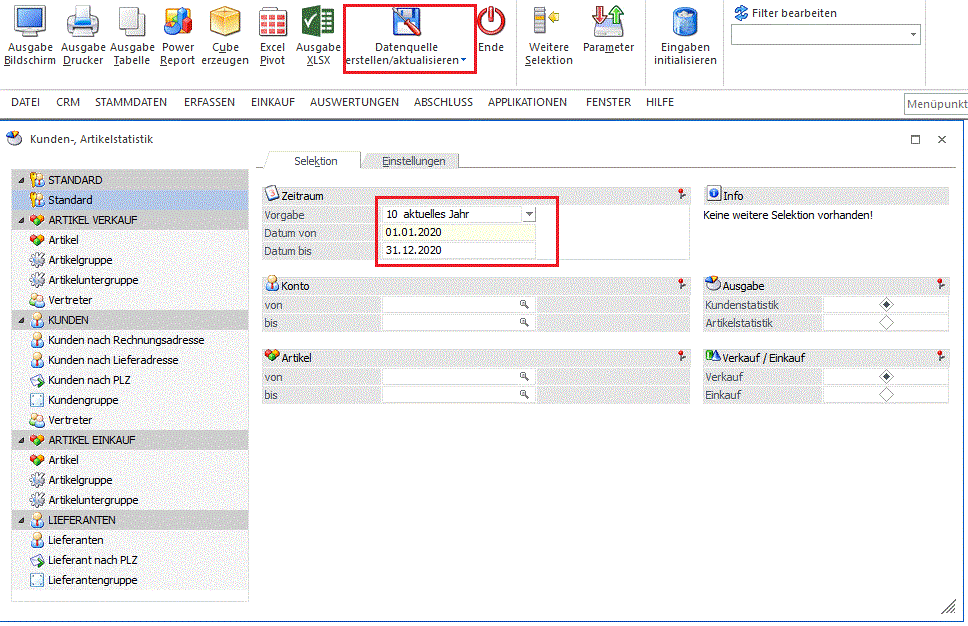
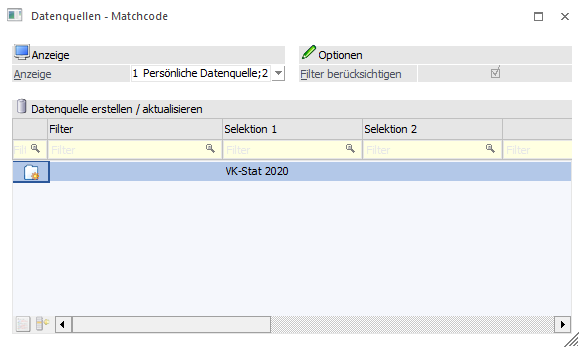
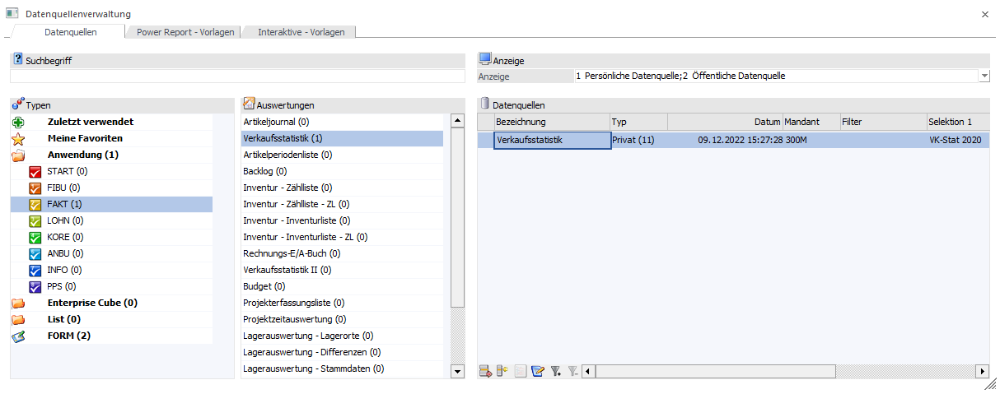

Die Verkaufsstatistik wird im Mandanten 300M aus
1 WinLine FAKT
1 AUSWERTUNGEN
1 Statistik
1 Verkaufsstatistik
für das Jahr 2020 mit aktiviertem Ribbonbutton "Datenquelle erstellen" z. B. via "Ausgabe Bildschirm" ausgegeben.

Im Zuge dessen kann die Datenquelle definiert und über den Ribbonbutton "OK" angelegt werden.

Die so erstellte Datenquelle kann über
1 WinLine INFO
1 BUSINESS INTELLIGENCE
1 Datenquellenverwaltung
bearbeitet, bzw. zur Kontrolle ausgegeben werden.

Somit steht sie im Programm u. a. innerhalb des Moduls WinLine SMART SCORE zur Verfügung.